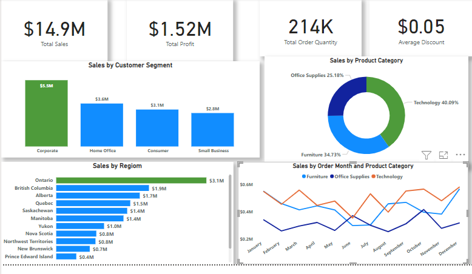
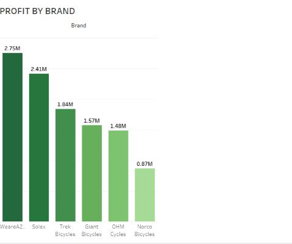
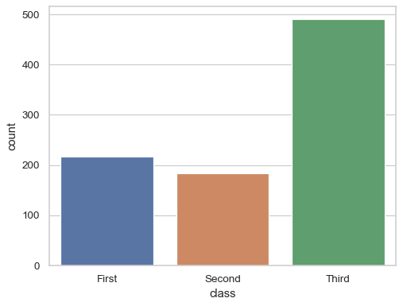
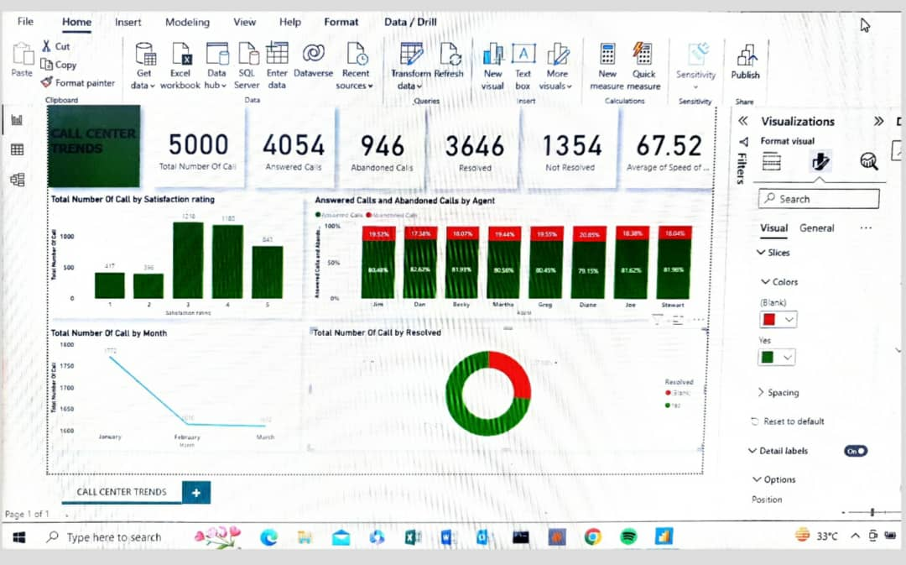

Great Superstores Sales Analysis
The entire data cleaning, data wrangling and presentation of this project was done with Power Bi. Loads of cleaning was done which was a chuck of the entire process, then I was able to get so many insights from this analysis which will help the company to make informed decisions.

KPMG Virtual Internship
(Sprocket Central Pty Ltd Data Set)
This project helped me to learn and get more knowlegde on the how versatile Tableau can be. This data was a very DIRTY one. The use of Micrsoft Excel came handy, I used Micrsoft Excel to clean and wrangle the data. Would have used Pivot for my presentation and dashboard but I used Tableau to broaden my perspective and to learn how to work with different tools in one project. LOL.

PROSPER LOANS
This is a data analysis on Proper Loan company that offers short-term loans (maximum of 60 months) to customers, the data provided will be cleaned, wrangled, visualised and interperetd to ascertain the company's well-being and prospects to the company's stakeholders.
Adventure Works Cycle
Created an App using Power Apps, using Microsoft Sharepoint for my data where the employees of Adventure Works Cycle can shop at a discounted rate, used Power Automate to automate the shopping process whereby the Manager can see what the order(s) requested via the staff email, aprrove or reject and respond using his/her email as well. Also, used Microsoft Excel and Power Bi to clean and present ta Sales report to the manangement for the period under review. Did a demo to show how my app works and got my Microsoft PowerUp Certificate

Call Center Trend
I got this data from Forage "https://www.theforage.com/modules/a87GpgE6tiku7q3gu/uJRb9cGfxd38kToRC?ref=YN3uStmsFvNkPfoc4" , downloaded the data into Power Bi and subsequently to Power query to transform the data. Basically the data was fairly clean, wanted to remove the null values but that will affect the entire number of calls received as they all have CALL IDs, further changed some of the columns to their accurate data data type, created a new measure using 'COUNTROWS' function get the total number of calls to the call center, used split columns to split theses columns 'ANSWERED (Y/N) and RECOVERED (Y/N) with replace values to name the new columns. Finally closed and applied the cleaned data to my power bi for visualization of these KPI's and many more:
Overall customer satisfaction
Overall calls answered/abandoned
Calls by time
Average speed of answer
Agent’s performance quadrant -> average handle time (talk duration) vs calls answered.